Welcome! In this workshop you'll assemble the Energy IoT MeshEMS controller — an open, modular energy-management hardware platform from Energy IoT Open Source (EIOT), the Oakland-based 501(c)(3) nonprofit.
There is an option to start with a bare PCB board. In this guide, we will use the commercially available, pre-wired EMS PCB board from New Energy Solutions Lab, LLC (NESL). NESL commercialized the first version of MeshEMS, removing the need for manual wiring and adding support for hardware expansion.
Starting from the bare NESL board, you'll solder every component yourself and finish with an assembled controller that can talk Modbus RS-485, connect over Ethernet, switch loads with solid-state relays, log to a microSD card, read GPS and temperature sensors — and grow with whatever you want to build next on its expansion headers.
No prior electronics-design experience is needed. If you can hold a soldering iron, you can build this. Every step has photos of exactly what your board should look like, plus a checkpoint before you move on.
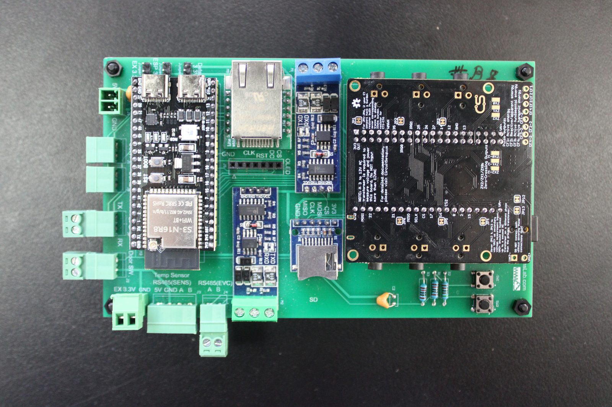
The goal: your fully assembled Energy IoT MeshEMS controller — shown here with the optional 6-channel energy-meter expansion board riding on the expansion headers. Every component is installed by you in this workshop.
Two minutes of orientation saves an hour of desoldering. Match each number below to the annotated photo.
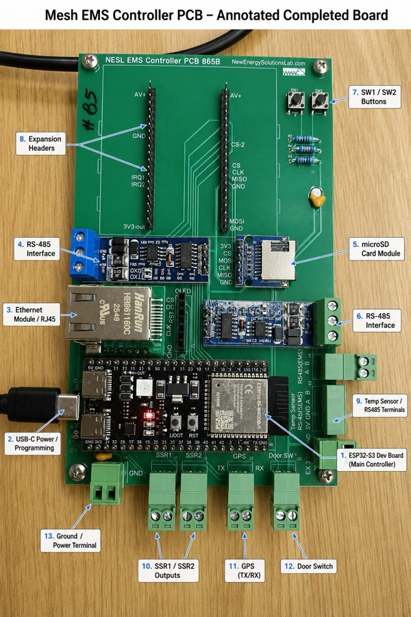
The assembled board with every component numbered — refer back to this photo throughout the build.
#
Component
What it does
0
NESL EMS Controller PCB 865B
Commercial PCB board with built-in wiring for the required components: MCU, 2 Modbus RS-485 interfaces, Ethernet RJ45, control buttons, power supply, sensor IO, and a 40-pin expansion slot.
1
ESP32-S3 Dual-core microcontroller
The brain. Dual-core microcontroller with Wi-Fi & Bluetooth. Plugs into female headers — never soldered directly.
2
USB-C port
Powers the board and programs the ESP32-S3 from your laptop.
3
Ethernet module (RJ45)
Wired network connection — for sites where Wi-Fi isn't reliable enough for an EMS.
4
RS-485 interface #1
Modbus RTU bus — talks to energy meters, inverters, and EV chargers.
5
microSD card module
Local data logging: store measurements even when the network is down.
6
RS-485 interface #2
Second, independent Modbus bus — e.g. sensors on one bus, an EV charger (EVC) on the other.
7
SW1 / SW2 buttons
User buttons — reset, mode select, or whatever your firmware assigns.
8
Expansion headers
Your playground. SPI, IRQ lines, 3.3 V and GND broken out for add-on boards.
9
Temp sensor / RS-485 terminals
Screw terminals for a temperature probe and the sensor-side RS-485 bus (5 V, GND, A, B).
10
SSR1 / SSR2 outputs
Drive two solid-state relays to switch real loads — heaters, pumps, contactors.
11
GPS (TX/RX)
Serial port for a GPS module — precise time and location stamping.
12
Door switch
Input for an enclosure tamper/door switch.
13
Ground / power terminal
5 V and GND screw terminal for powering the board in the field (instead of USB-C).
Soldering crash course
Everything on this board is through-hole — the friendliest kind of soldering. Here's the whole technique in four moves.
Heat both. Touch the iron tip to the pad and the component leg at the same time. Count one second.
Feed solder. Touch solder to the joint (not the iron). It should flow around the leg like water.
Remove solder, then iron. Total contact time: 2–3 seconds. Longer risks lifting a pad.
Don't move the part while the joint cools (~2 seconds), or you'll get a grainy "cold joint".
✓ Good joint
Shiny cone, like a tiny volcano hugging the leg. Solder flowed onto both pad and leg.
✗ Cold joint
Dull, grainy ball sitting on top. Reheat it and add a touch of flux.
✗ Bridge
Solder connecting two neighbouring pads. Wipe the hot iron across to separate, or use solder wick.
✗ Starved joint
Pin visible through a thin ring of solder. Just add a little more.
Safety
The iron tip is ~360 °C / 685 °F — it looks identical hot or cold, so always return it to its stand. Work in a ventilated area, don't inhale the flux smoke, wear eye protection when clipping leads (they fly!), and wash your hands after handling solder.
Tools & parts checklist
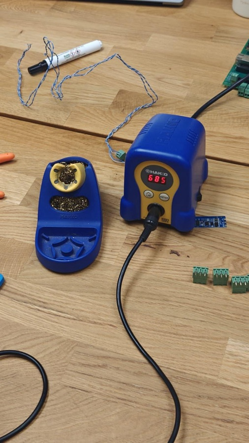
Soldering station set to 685 °F (~363 °C), with brass-wool tip cleaner.
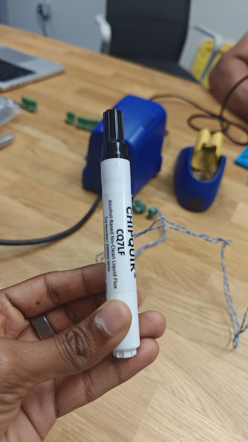
No-clean flux pen (Chip Quik CQ2LF) — your secret weapon for clean joints.
On your bench
Soldering iron set to 685 °F (~363 °C), with a damp sponge or brass wool for the tip
Solder (leaded 60/40 or lead-free — thin, 0.8 mm works well for through-hole)
Flux pen — apply to pads before soldering; makes solder flow and joints shiny
Flush cutters / pliers — for trimming component legs after soldering
Foam block — holds parts flat against the board while you flip it over to solder
Optional but nice: solder wick (for fixing bridges), multimeter (for the smoke test)
In your parts kit
Qty
Part
Used in
1
NESL EMS Controller PCB 865B
All soldering steps
1
Ceramic capacitor
Step 1 — DC smoothing
3
Resistors
Step 1 — button pull-ups
2
Tactile push buttons (SW1, SW2)
Step 1
3
2-pin jumper headers + shunts
Step 2 — power selection
—
Male pin headers (long strips)
Step 3 — expansion slot
3
Female headers (2 long + 1 short)
Step 3 — ESP32 socket + LED/OLED
1
Ethernet module (HanRun RJ45)
Step 4
2
RS-485 transceiver modules
Step 5
1
microSD card module
Step 5
2
Vertical terminal blocks
Step 5 — RS-485 field wiring
5
Right-angle 2-pin terminal blocks
Step 6 — power, SSR1, SSR2, GPS, door switch
1
Right-angle 4-pin terminal block
Step 6 — temp sensor / RS-485
1
ESP32-S3 microprocessor
Step 7 — plugs in, no soldering
Golden rule: flat first, bulky last
We solder the flattest parts first so the board sits level when flipped, then the headers, then the modules — and the chunky screw-terminal blocks near the end, where they can no longer get in your iron's way. Follow the step order and the board always lies flat when it matters.
Step 1Capacitor, resistors, buttons
Goal: the shortest components go in first — one capacitor, three resistors, and the two user buttons in the top-right corner of the board.
Orient the board printing-side up. The white silkscreen text ("NESL EMS Controller PCB 865B") must face you — all components mount on this side.
Insert the capacitor into its footprint and seat it flush. It smooths the DC supply rail. It's a ceramic capacitor, so it has no polarity — either way round is fine.
Insert the three resistors next to the buttons and bend the legs slightly outward on the back so they stay put. Resistors have no polarity — either way round is fine. (They're the pull-ups for the buttons.)
Insert buttons SW1 and SW2. They click into place; the pins only fit one way.
Flip, solder, trim. Flip the board onto the foam, solder every leg, then clip the excess leads flush with your cutters.
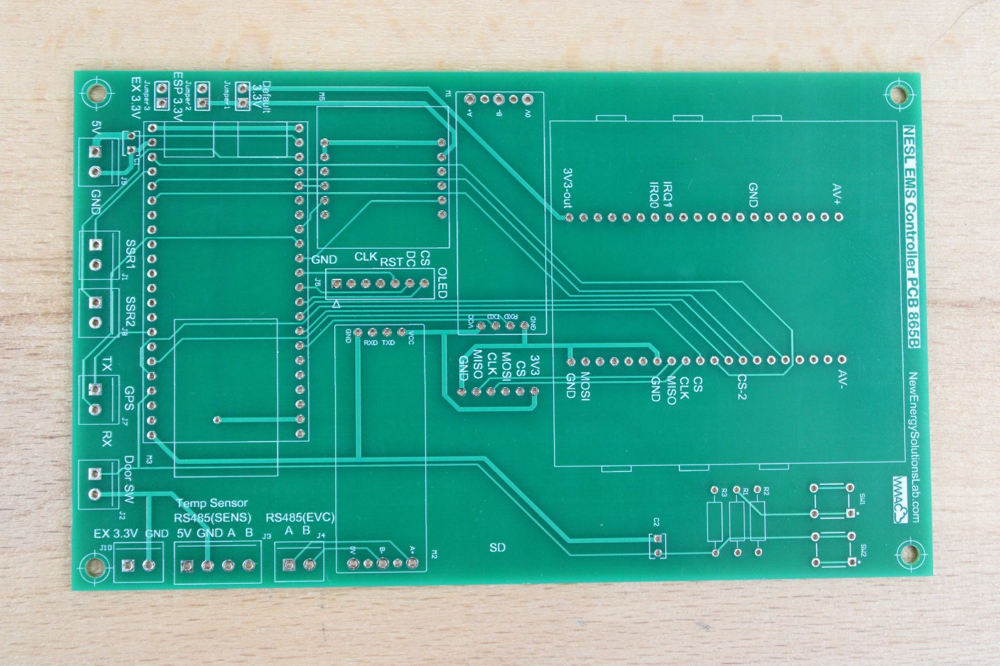
Your starting point: the bare board, silkscreen (printing) side up.
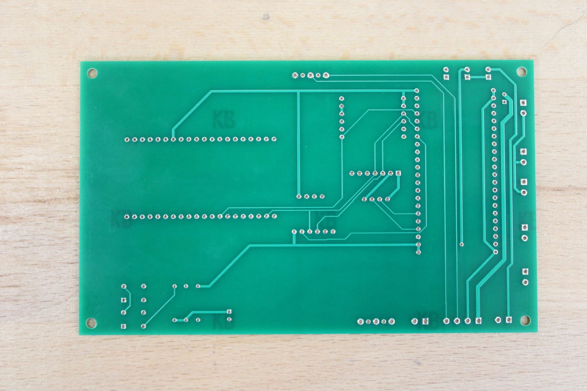
The back (solder side) — this is the side you'll solder on all workshop long.
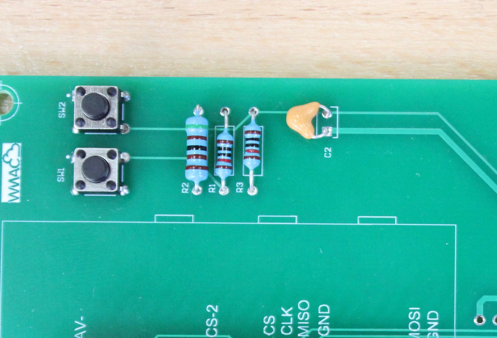
Front: buttons SW1/SW2, resistors R1–R3, and capacitor C2 installed in the corner.
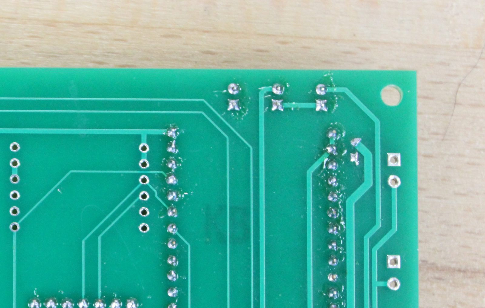
Back: the same corner soldered and trimmed — shiny cones, no bridges.
✓ Checkpoint before Step 2
Capacitor sits flush against the board
Both buttons click when pressed and sit flush against the board
All joints are shiny cones; no bridges between neighbouring pads
All legs trimmed flush on the back
Step 2Power jumpers
Goal: install the three 2-pin jumper headers (bottom-left corner) that select how power is routed — labeled Default 3.3V, ESP 3.3V, and EX 3.3V on the silkscreen. These let you choose what supplies the 3.3 V rail — e.g. powering the Ethernet module.
Place the three 2-pin headers into the Jumper 1 / Jumper 2 / Jumper 3 footprints, short pins into the board, plastic body on top.
Press a foam block over them and flip the board — the foam holds the headers flush while you solder. A header soldered at an angle won't take its shunt properly.
Solder one pin of each header first, then check it's sitting straight. If not, reheat that one pin and press gently. Then solder the remaining pins.
Place the jumper shunts on according to your power setup (for the workshop: the Default 3.3V position).
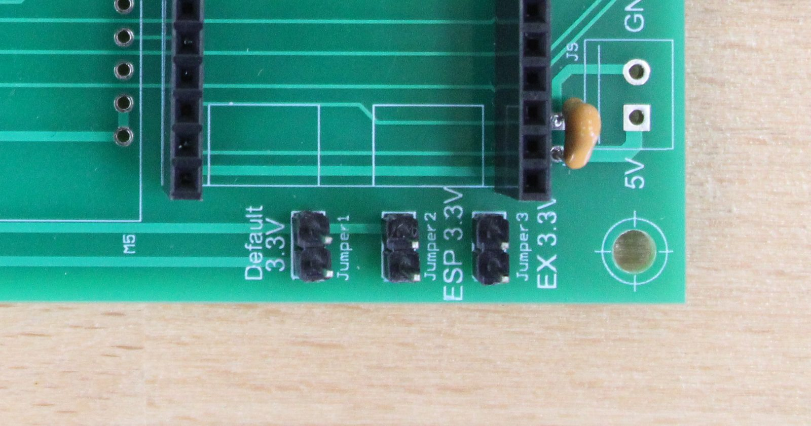
The three jumper headers soldered in — silkscreen labels Jumper 1/2/3: Default 3.3V, ESP 3.3V, EX 3.3V. Shunts not yet placed; yours goes on Default 3.3V.
✓ Checkpoint before Step 3
All three headers stand perfectly vertical
Shunts slide on and off smoothly
Shunt placed on Default 3.3V for the workshop build
Step 3Male & female headers
Goal: install the pin headers that make the Energy IoT MeshEMS modular — sockets for the ESP32-S3 and display, and expansion pins for everything you'll invent later.
Male headers → expansion slot. These long pin strips break out SPI, IRQ lines, 3.3 V and GND for add-on boards.
Female headers → controller side. Two long ones and one short horizontal one:
The 2 long female headers are the socket for the ESP32-S3 microprocessor — socketing (instead of soldering the module) means you can swap or upgrade the brain in seconds.
The 1 short female header is for the LED / OLED display.
Keep them straight — use the mating trick: for the two long female headers, plug the ESP32-S3 dev board into them before soldering, insert the whole sandwich into the PCB, and solder. The module guarantees both rows are perfectly parallel. (Remove the ESP32 after soldering — it goes back in at Step 7.)
As always: solder one end pin, check alignment, solder the other end pin, re-check, then fill in the rest.
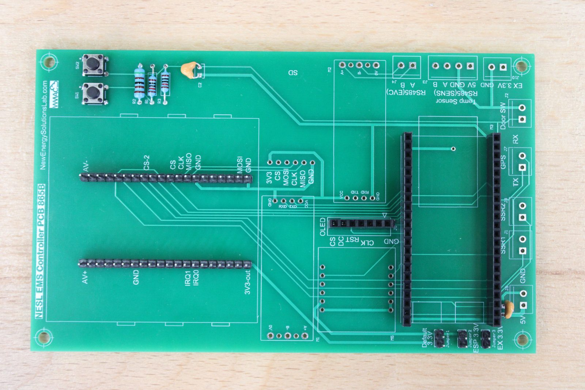
Front: male expansion rows, the two ESP32-S3 socket rows, and the short OLED header — all standing straight.
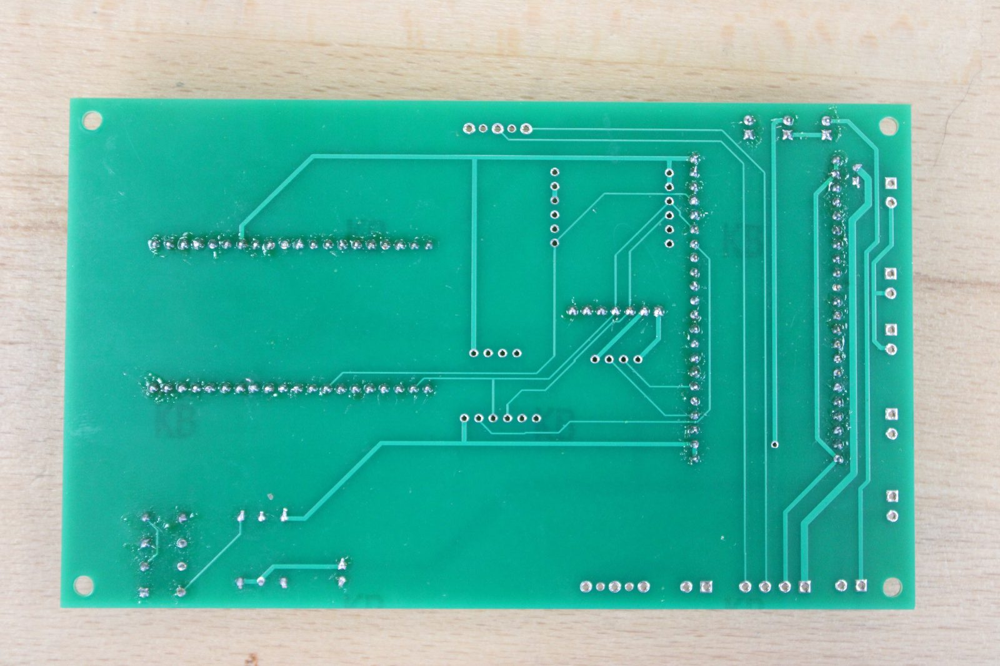
Back: long, straight rows of joints — inspect for bridges before moving on.
Long headers drift
A 20+ pin header WILL lean while you solder pin after pin. Tack the two end pins first and re-check with the mating module before committing to the middle pins. Desoldering a 20-pin header is miserable — ask us how we know.
✓ Checkpoint before Step 4
ESP32-S3 dev board slides smoothly in and out of the two female rows
Male expansion pins are vertical (sight down the rows to check)
No solder bridges between adjacent pins — inspect with good light
Step 4Ethernet
Goal: install the Ethernet module (HanRun RJ45) on the left edge — wired networking for installations where Wi-Fi doesn't cut it.
Insert the Ethernet module into its footprint on the left edge, RJ45 jack facing outward so a cable can plug in past the board edge.
The module is heavy relative to its pins: hold it firmly flush (foam block again) and tack two diagonal pins first.
Verify the jack overhangs the board edge correctly, then solder all remaining pins generously — the jack takes real force every time a cable clicks in.
Remember: this module's power comes via the jumpers you installed in Step 2.
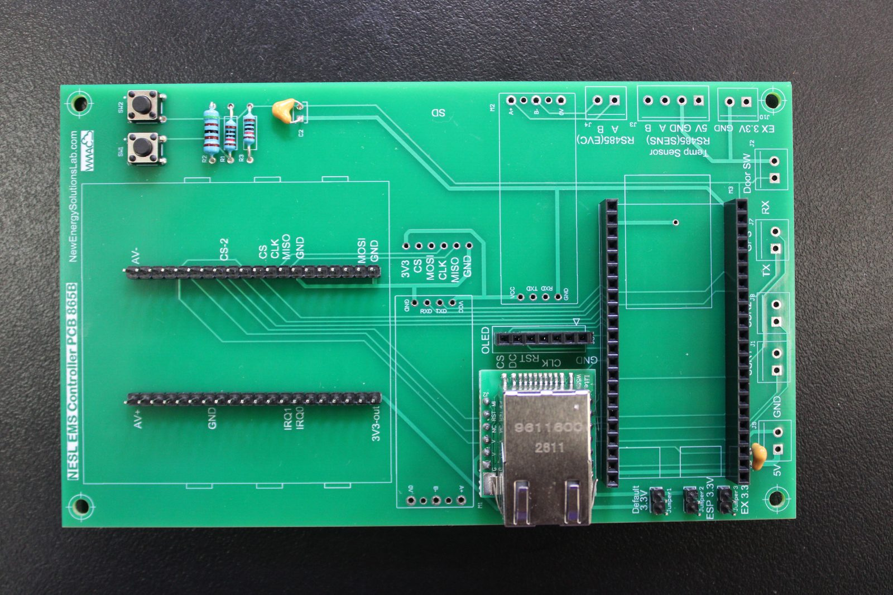
The Ethernet module seated, RJ45 jack overhanging the board edge.
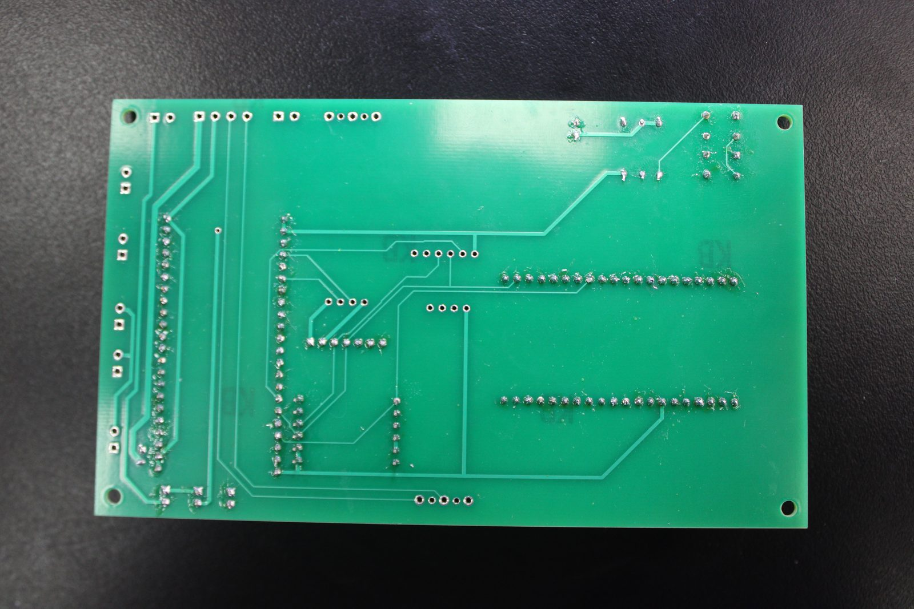
Back: Ethernet joints soldered generously — the jack takes force with every cable click.
✓ Checkpoint before Step 5
An Ethernet cable clicks in and releases cleanly
Module doesn't flex or lift when you tug the cable gently
Step 5Modbus (RS-485) & microSD
Goal: install the two RS-485 transceiver modules — the Energy IoT MeshEMS's voice on the Modbus bus — plus the microSD card module for local logging, and the two vertical terminal blocks that wire the buses to the field.
RS-485 module #1 (blue board) mounts next to the Ethernet module, beside the microSD position. Match the pin labels on the module (RXD/TXD side) to the silkscreen on the PCB.
RS-485 module #2 mounts below the microSD module, feeding the Temp Sensor / RS-485 terminal group — the silkscreen marks the two buses RS485(SENS) and RS485(EVC): one for sensors, one for an EV charger or other equipment.
Vertical terminal blocks — install the two vertical RS-485 terminal blocks (A/B field wiring) alongside their transceivers now.
microSD module — check its pin order (3V3, CS, MOSI, CLK, MISO, GND) against the PCB silkscreen before soldering; not all microSD breakouts share the same pinout.
For each module: insert the pins, hold flush with foam, tack one corner pin, verify it's level, then solder the rest.
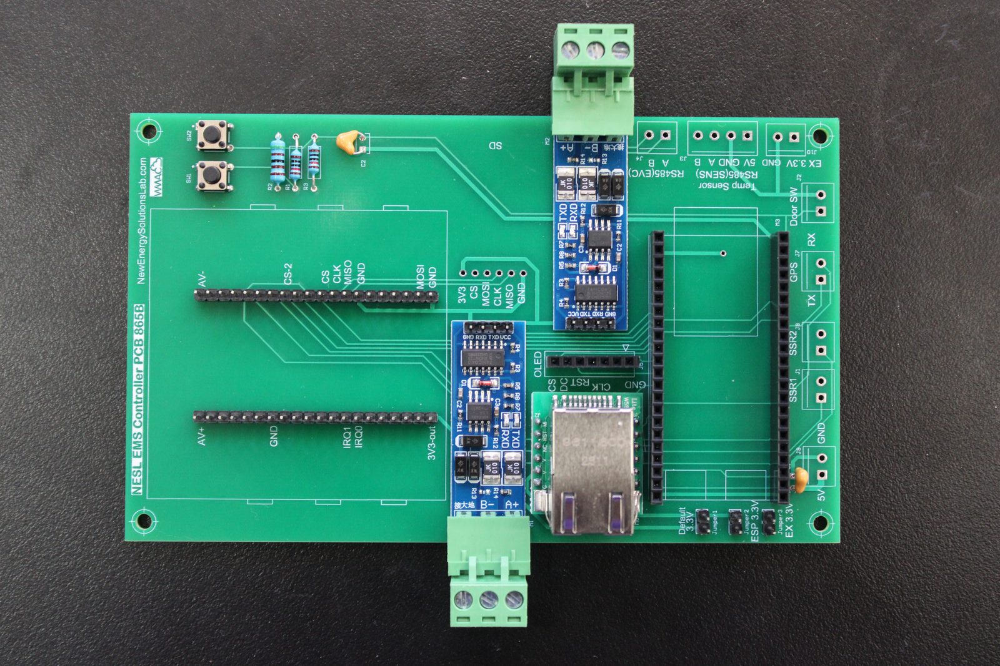
Both RS-485 transceivers, the microSD module, and the vertical bus terminals in place. (This build added Ethernet later — yours already has it.)
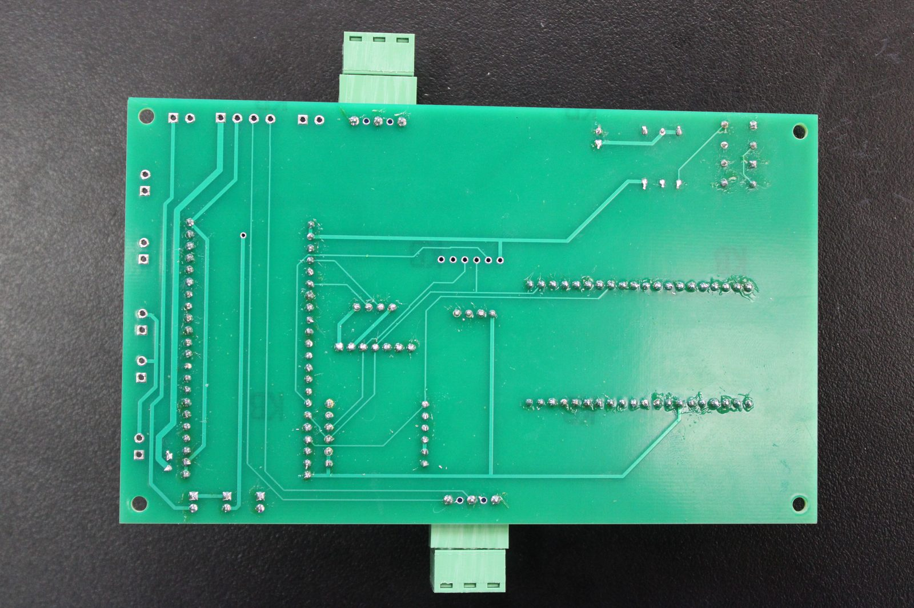
Back: module joints soldered.
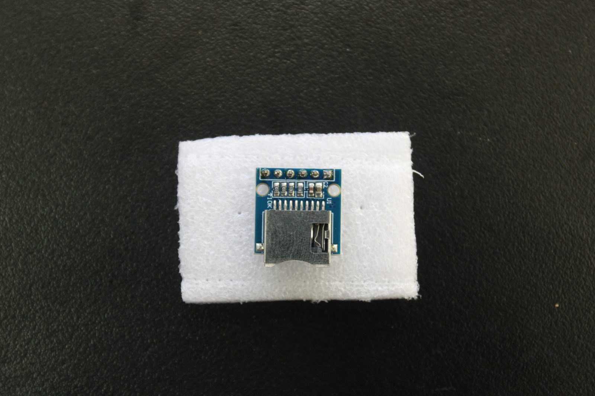
The foam trick, in action: press the module into the foam, flip the sandwich, solder — it stays perfectly flush.
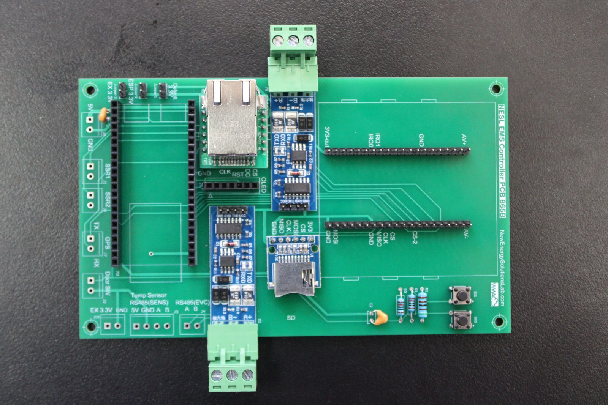
Checkpoint state: Ethernet, both RS-485 transceivers, and microSD all seated.
Why two RS-485 buses?
Modbus RTU allows many devices per bus, but mixing slow sensors with chatty equipment hurts polling rates. Two independent buses let you poll a power meter fast on one bus while temperature sensors amble along on the other.
✓ Checkpoint before Step 6
Module pin labels match the PCB silkscreen (especially the microSD pinout)
All modules sit level and fully seated; vertical terminal blocks stand straight
A/B lines of each RS-485 module route to the correct terminal block (SENS vs EVC)
Step 6Terminal connectors
Goal: install the six remaining green screw-terminal blocks — this is where the real world (power, relays, sensors, GPS, door switch) wires into your Energy IoT MeshEMS.
Qty
Connector
Position
5
Right-angle 2-pin
Bottom edge: 5V/GND power, SSR1, SSR2, GPS (TX/RX), Door SW
1
Right-angle 4-pin
Right edge: Temp Sensor / RS-485 (3.3V, GND, 5V, A, B group)
Right-angle blocks face outward — the wire-entry holes must point off the edge of the board, so you can insert wires with the board mounted in an enclosure.
Insert all connectors, hold them with the foam block, and flip.
Solder one pin per connector first, then verify each block is flush and straight before soldering the rest. These take mechanical force when you screw wires in — a tilted block is a future broken joint.
These pins are thick and sink heat: hold the iron a beat longer and use plenty of solder so it fills the hole completely.
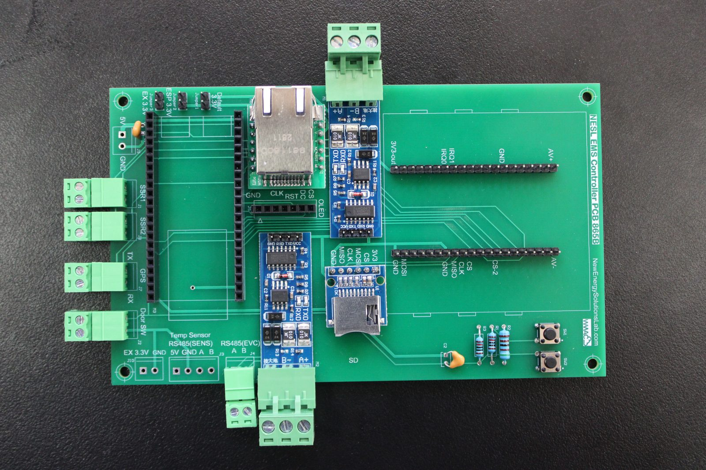
Halfway there: right-angle blocks going in along the edges, openings facing out.
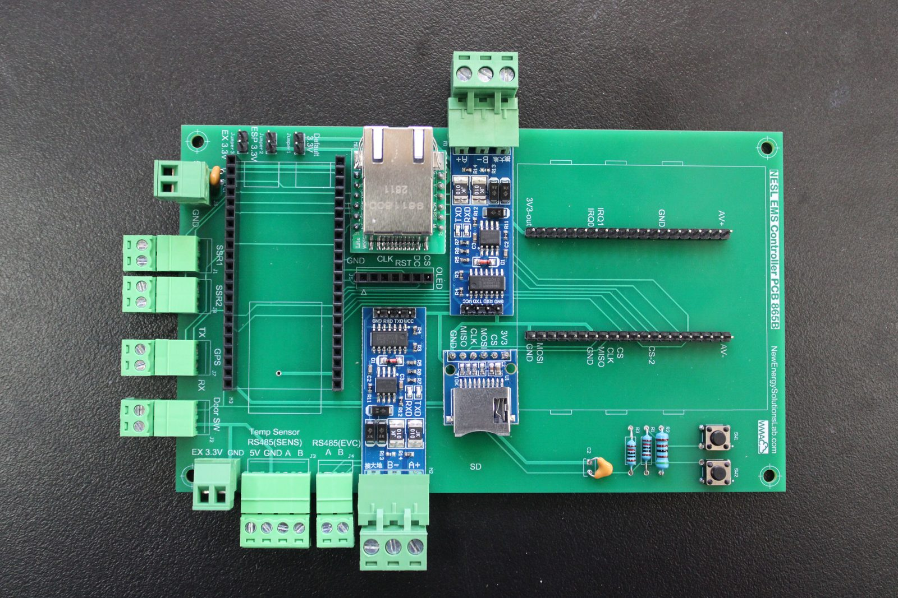
All terminal blocks installed, wire-entry openings off the board edge.
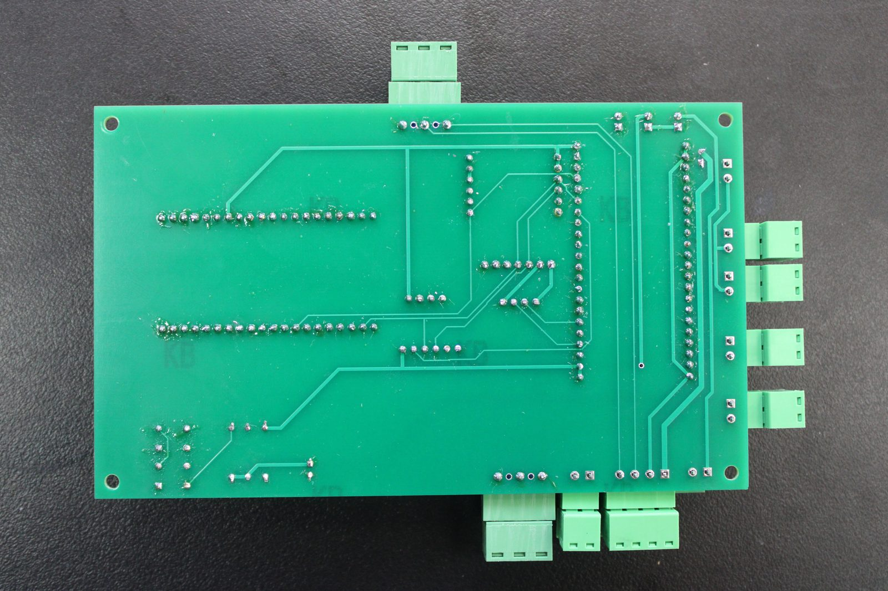
Back: terminal-block joints. Note how much solder these big pins take — that's normal.
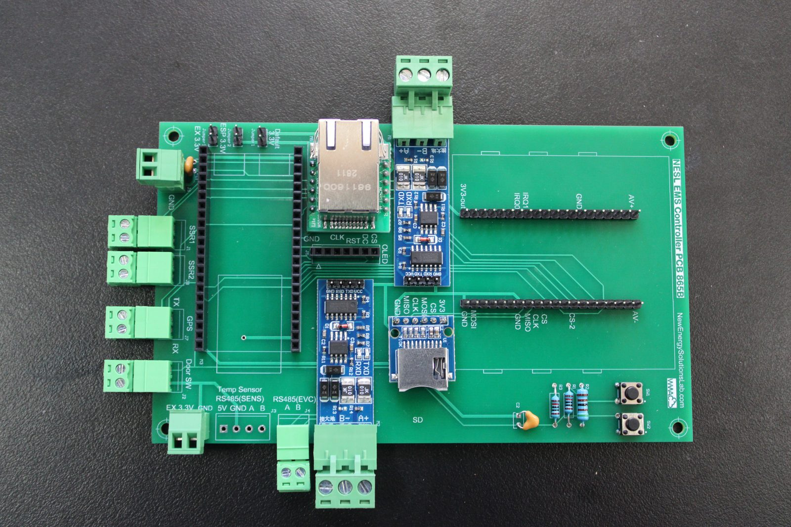
The completed board — every part installed except the brain.
✓ Checkpoint before Step 7
All wire-entry openings face outward, off the board edge
Every block sits flush — try wiggling each one; nothing should move
Every pin's hole is completely filled with solder
Step 7Microprocessor (ESP32-S3)
Goal: the moment of truth — seat the ESP32-S3 dev board into its socket. No soldering in this step.
Check orientation first. The USB-C connectors on the dev board must face the left edge of the PCB (matching the cover photo). Plugging it in backwards applies power to the wrong pins.
Align all pins over both female header rows before pressing — it's easy to be offset by one pin. Count pins at both ends.
Press down evenly with both thumbs until the module seats fully. It takes noticeable force; support the PCB from beneath.
If you have the OLED display, seat it in the short female header the same way.
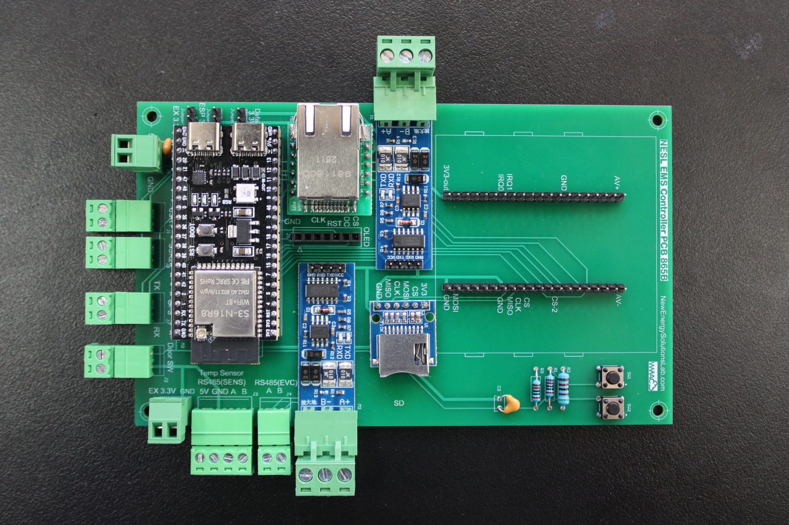
The ESP32-S3 dev board seated in its socket — both USB-C connectors facing the left edge of the PCB.
Before you press
Offset-by-one is the #1 assembly error at this stage — it can put 5 V on a 3.3 V pin. Check both ends of both rows, then press.
Step 8Power-up & smoke test
Goal: verify your build before trusting it with real hardware.
Visual sweep first. Back of the board under good light: any solder bridges, stray clipped legs, or unfilled joints? Fix them now.
Optional but recommended: with a multimeter in continuity mode, confirm 3.3 V and GND are not shorted (probe the expansion header's 3V3-out and GND pins — no beep!).
Connect USB-C to your laptop. The ESP32-S3's power LED should light immediately.
Leave it powered for a minute. Nothing should get hot or smell — the ESP32 module running slightly warm is normal.
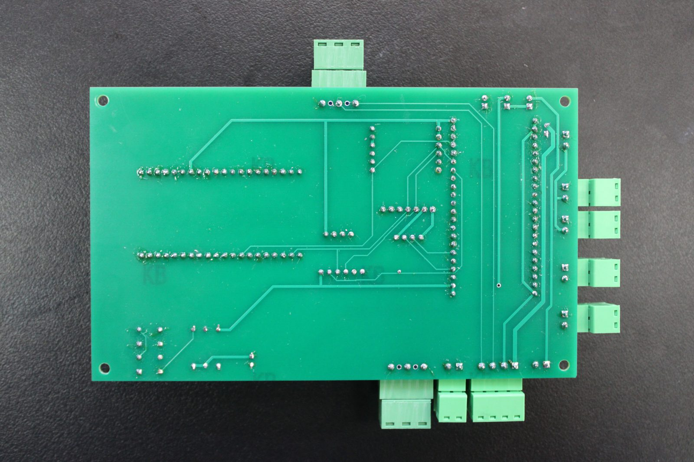
The visual sweep: the back of the fully assembled board. Look for bridges, stray clipped legs, and unfilled joints.
✓ Checkpoint before Step 9
No solder bridges or stray leads on the back of the board
No short between 3.3 V and GND
Power LED lights on USB-C; nothing overheats
Step 9Flash your firmware
Goal: put a brain in the machine. The firmware for this board — the Energy IoT MeshEMS OpenAMI metering application — lives in our open-source GitHub, together with the complete, always-up-to-date setup and flashing instructions.
Follow the README
There are three application-specific repositories:
The README walks you through everything, step by step:
Install Visual Studio Code and the PlatformIO extension.
Clone the repository and open the project in VSCode.
Configure the build — feature flags in platformio.ini select which subsystems (meters, display, SSR bank…) are compiled in.
Build and flash the firmware over USB-C, then open the serial monitor and watch it boot (see the README's Upload & Serial Monitor section).
Two USB-C ports?
The ESP32-S3 dev board has two USB-C connectors: one labeled USB (native USB — use this one for flashing) and one labeled UART/COM. If your board doesn't show up on one port, try the other.
If the port never appears
Try a different USB-C cable first — charge-only cables (no data lines) are the single most common "bricked board" at workshops. Then try the board's other USB port, then another laptop USB port. More fixes live in the README's Troubleshooting section.
✓ You're done when…
PlatformIO builds and flashes the firmware without errors
The boot log appears on the serial monitor
The subsystems you enabled (meter readings, display, buttons) report in the log
One firmware, many configurations
You don't need a different framework to make this board yours. Every subsystem in the Energy IoT MeshEMS firmware — meter drivers, display, relays, web dashboard, SD logging — sits behind a feature flag in platformio.ini: uncomment the flags your project needs, rebuild, re-flash. The full flag reference lives in docs/FEATURE_FLAGS.md in the repo. And because the module is socketed, you can keep multiple pre-flashed ESP32s — one per configuration — and swap "brains" in seconds.
What will you build?
You now own a controller you built and understand down to every joint — and the firmware you just flashed already does the heavy lifting. Here's what it can do out of the box, and where you can take it:
Built in today — just flip the feature flag
Energy metering — poll DDS238, CHD130, or DDSU666 single-phase meters over RS-485 Modbus, or read the CircuitSetup ATM90E32 6-channel SPI meter board (the black expansion board on the cover photo) for 3-phase / multi-CT sites.
Telemetry — publish every reading over Wi-Fi or Ethernet via MQTT (ENABLE_MQTT).
Environmental monitoring — the SHT20 temperature/humidity sensor speaks Modbus on the sensor bus, with CSV logging to microSD (ENABLE_SD_SHT20_LOG).
Load control — switch the onboard SSR and an 8-channel I2C SSR bank (ENABLE_RELAYS) — heaters, pumps, contactors.
Live site dashboard — ENABLE_WEBSERVER serves a map-based relay dashboard with per-house energy timelines, straight off the board (beta — field-validated at the Sezibwa Homes microgrid in Uganda).
Where you can take it
Your own control logic — combine what's already there: a solar-surplus contactor, a temperature-controlled cold room with door-switch alarm, a battery supervisor.
EV charging manager — the RS485(EVC) bus is reserved for exactly this: add a charger driver next to the meter drivers in src/metering/.
New meter or sensor support — every Modbus device driver follows the same pattern (src/metering/modbus_*.cpp); copy one and adapt it to your hardware.
New hardware — the expansion headers expose SPI, interrupts, and power; add your board and a driver in src/hw/. Design an add-on and show us — contributions are welcome at github.com/energy-iot.
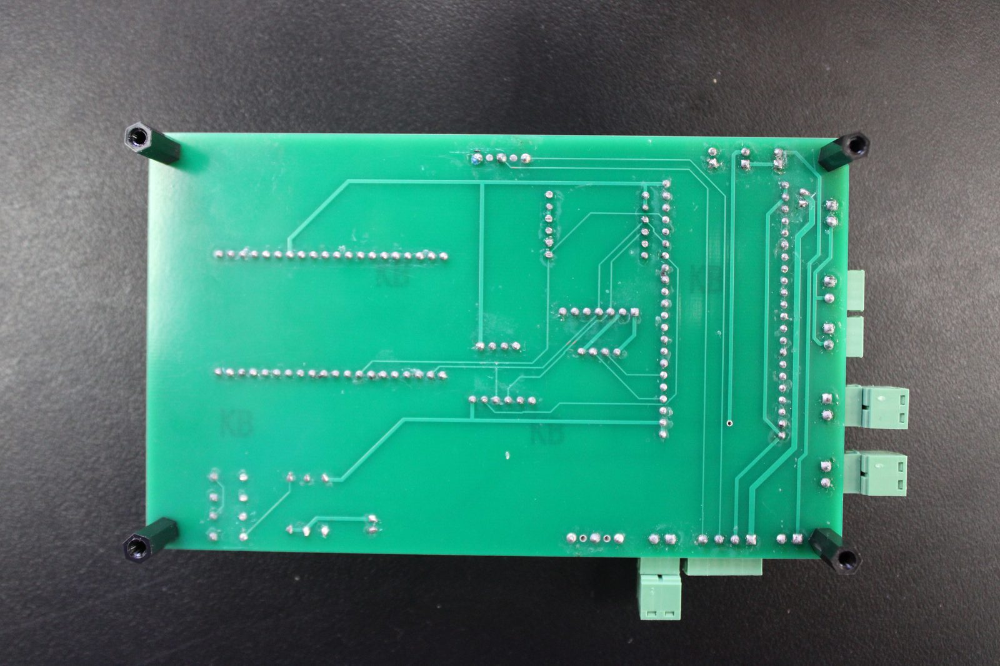
Finished: mounted on corner standoffs, ready for an enclosure — or for whatever you build next.
Keep going
Firmware examples, pinout maps, and the expansion-board template live at github.com/energy-iot. Energy IoT MeshEMS is an open-source project of Energy IoT Open Source under the Apache 2.0 License — contributions welcome.